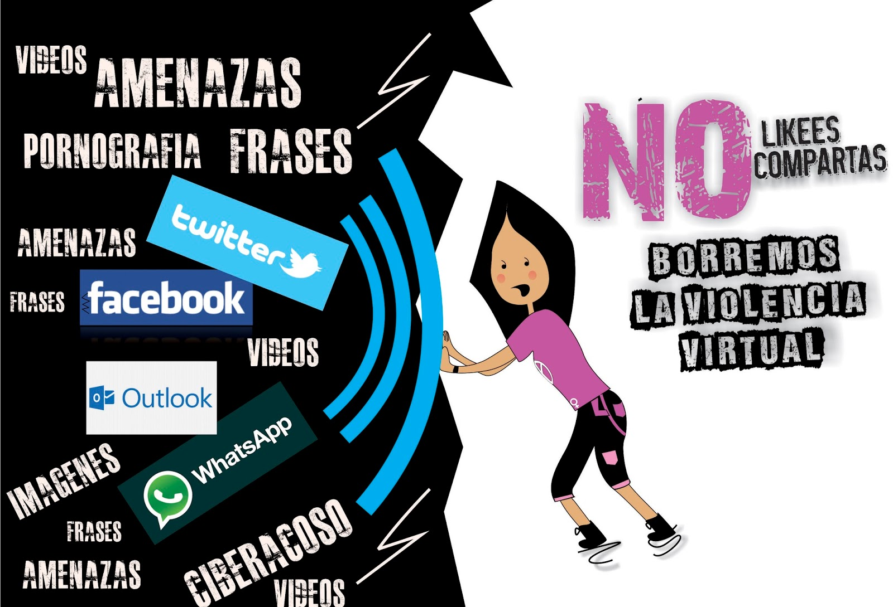

ACTIVIDAD 3

Objetivos:
1.- Reflexionar sobre el concepto de ciberacoso, sus causas, formatos de desarrollo y consecuencias.
2.- Favorecer la participación y el debate entre los alumnos sobre el uso saludable de las TIC, sus riesgos e inconvenientes.
3.- Incentivar la resolución positiva de los conflictos mediante la cooperación, mostrando los aspectos negativos de los comportamientos de violencia física, emocional o verbal.
Observa el siguiente vídeo: